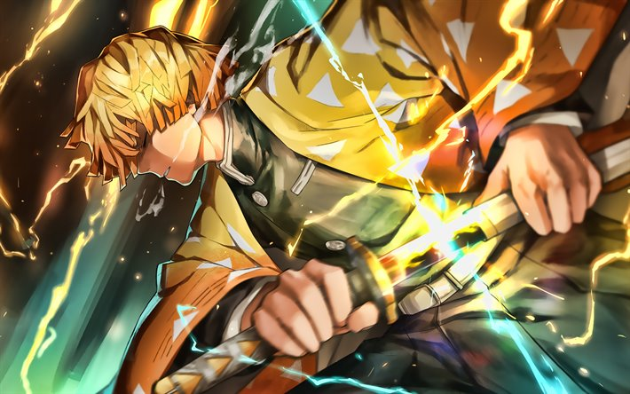

- 
Demon Slayer: Kimetsu no Yaiba (Japanese: 鬼滅の刃, Hepburn: Kimetsu no Yaiba, lit. "Blade of Demon Destruction"[4]) is a Japanese manga series written and illustrated by Koyoharu Gotouge. It follows Tanjiro Kamado, a young boy who wants to become a demon slayer after his family is slaughtered and his younger sister Nezuko is turned into a demon. It was serialized in Shueisha's shōnen manga magazine Weekly Shōnen Jump from February 2016 to May 2020, with its chapters collected in 23 tankōbon volumes. It has been published in English by Viz Media and simulpublished by Shueisha on their Manga Plus platform. A 26-episode anime television series adaptation produced by Ufotable aired in Japan from April to September 2019. A sequel film, Demon Slayer: Kimetsu no Yaiba the Movie: Mugen Train, premiered in October 2020 and became the highest-grossing anime film and Japanese film of all time. Meanwhile, the second season will premiere in 2021.